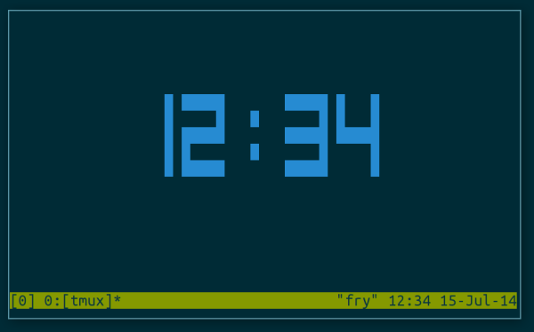

Как показать время в линукс-терминале
Написал lexlukov в категории Linux, 15 Июль, 2014

Иногда бывают моменты, когда вам хочется узнать время не выходя из терминала. Да, многие среды рабочего окружения показывают время по умолчанию где-нибудь в верхней панели и т.п. А что если вам нужно узнать время на сервере или что-то в этом роде?
Узнать время из терминала можно просто командой date. Если Откроете терминал и наберёте команду date вы увидите дату на сегодня и время.
Проблема с этой командой только в том, что её нужно каждый раз набирать. Другими словами, каждый раз когда вам нужно узнать время вам придётся набирать эту команду.
Для того, чтобы часы показывались непрерывно в открытом терминале, мы можем воспользоваться командой watch, которая позволяет выполнять команду с определенным интервалом.
watch -n 1 date +%r
Результат будет таким:
А если вы пользуетесь Tmux, то вы можете вывести часы как на самой первой картинке на этой странице. Для вывода часов в tmux вам нужно выполнить сочетание клавиш: Ctr-b затем t.